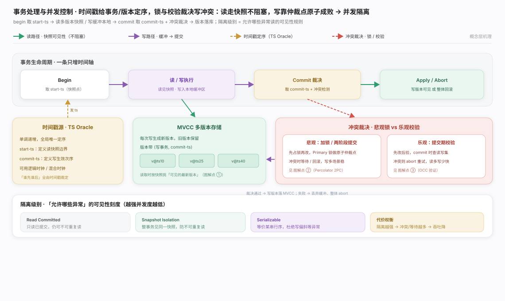
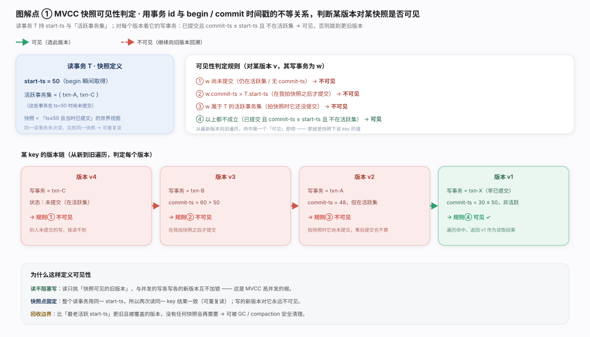
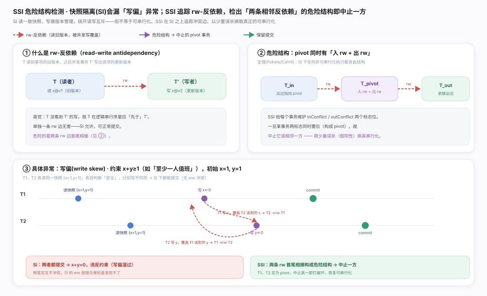
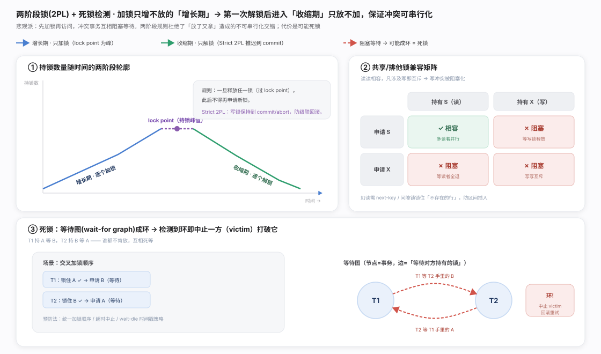
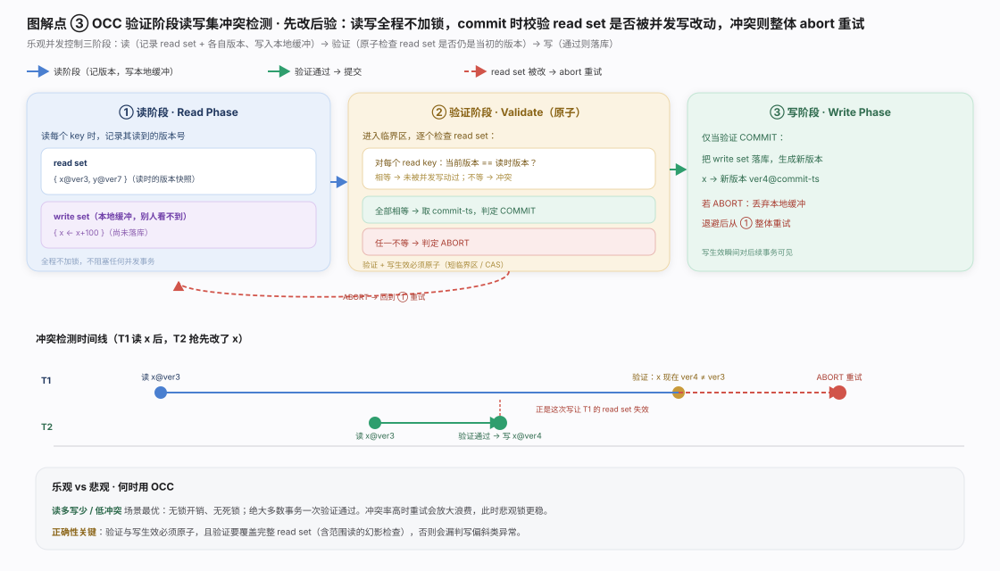
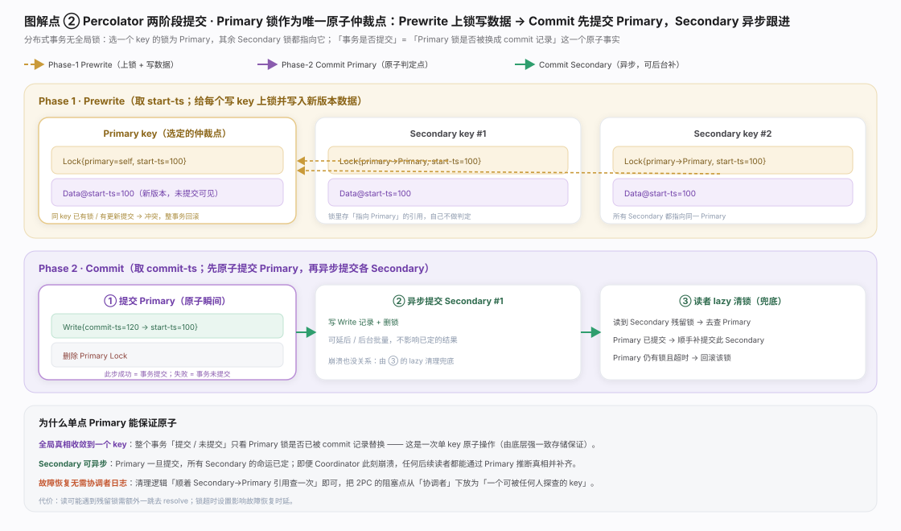
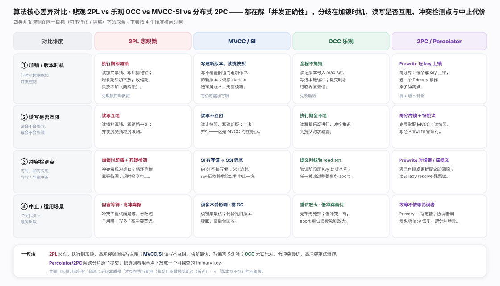
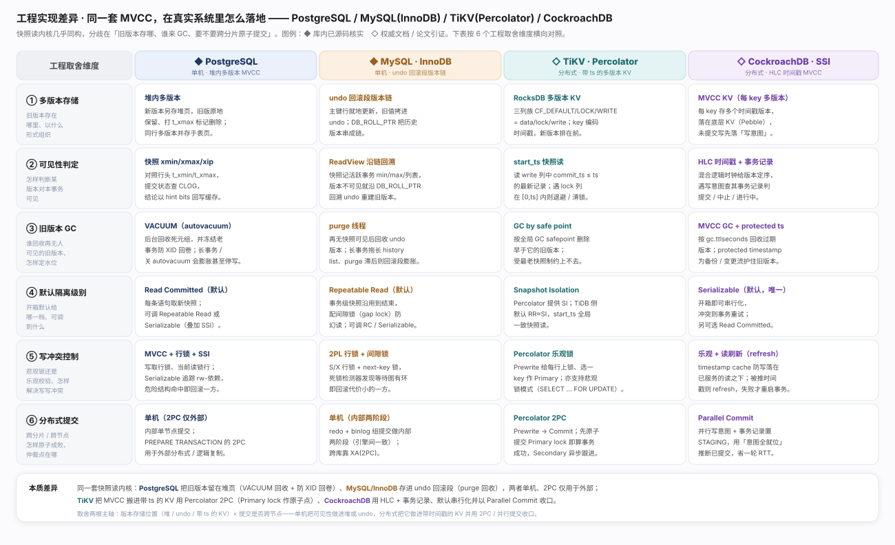

事务并发控制要同时满足隔离性（效果等价某个串行序）与性能（读写尽量并行）。四类算法在「悲观 vs 乐观」「有无多版本」的象限里各占一角：时间戳定序、锁或校验解冲突、读走快照、写靠仲裁点原子成败。分工见生态图。

MVCC：写不覆盖旧值而追加带 ⟨写事务, commit-ts⟩ 的新版本,读在自己的快照里从新向旧挑第一个「可见」版本。心脏是可见性判定（写者已提交且 commit-ts ≤ start-ts 且不在活跃集才可见),由此得读不阻塞写、可重复读、清晰 GC 边界。见图。

SSI：补纯快照隔离（SI）的写偏（write skew）漏洞——两事务各读重叠数据、各写不同 key,单独合法却破坏跨行约束。SSI 在 SI 之上追踪 rw-反依赖,出现「两条相邻反依赖构成的危险结构」即中止一方;代价是少量误杀,换来真正可串行化且保留「读不阻塞写」。见图。

2PL（悲观）：执行期加锁（读共享、写排他）并守两阶段纪律（增长期只加、收缩期只放）,保证冲突可串行化。冲突表现为等锁、可能死锁,靠等待图检测或超时兜底;幻读需谓词锁/间隙锁。高冲突稳（不重试只阻塞）,代价是读写互阻。见图。

OCC（乐观）：全程不加锁,赌冲突罕见。三阶段——读阶段记 read set 版本号、写进本地缓冲;验证阶段（原子临界区）逐个比对 read set 版本是否未变,全等 COMMIT 否则 ABORT;写阶段落库。铁律：验证与写生效必须原子且覆盖完整 read set。低冲突最优,高冲突重试爆炸。见图。

Percolator（跨分片、无全局锁）：从写 key 里选一个当 Primary,其余 Secondary 锁存指向 Primary 的引用,于是「事务是否提交」归约为「Primary 锁是否已换成 commit 记录」这一个单 key 原子事实。Prewrite 上锁写未提交版本、Commit 先原子提交 Primary（即算成功）Secondary 异步跟进,兜底靠读者 lazy 顺引用清锁。把 2PC 协调者阻塞点下放成任何人可探查的 key。见图。

四类并发控制的取舍本质是两个正交维度的四象限：冲突执行期挡（悲观 2PL）还是提交期验（乐观 OCC） × 是否维护多版本（MVCC 有／纯锁无）。2PL 高冲突稳但读写互阻;MVCC-SI 读写不互阻、读多最优、写偏需 SSI 补;OCC 低冲突最优、高冲突重试爆炸;Percolator 专解跨分片原子提交。一句话总纲：无普适最优,按读写比、冲突率、是否跨分片选型。见图。

MVCC 快照读内核几乎人人相同,工程差异集中在三处：旧版本存哪、谁 GC、要不要跨分片原子提交。PostgreSQL 多版本直接留在堆页（旧版打 t_xmax）,死版本由 VACUUM/autovacuum 回收并防 XID 回卷,默认 Read Committed;MySQL InnoDB 就地更新、旧值进 undo 回滚段串成版本链,读按 ReadView 沿 DB_ROLL_PTR 回溯,purge 线程清理,默认 Repeatable Read（间隙锁防幻读）——两者都单机。跨节点场景把它搬进带时间戳的 KV：TiKV 用 Percolator（RocksDB 三列族 + start_ts/commit_ts,Prewrite 选 Primary lock、Commit 先原子提交 Primary）;CockroachDB 用 HLC 时间戳 + 事务记录,默认 Serializable（乐观 + timestamp cache + 读刷新）,提交用 Parallel Commit 省一轮 RTT。一句话：单机把可见性做进堆／undo,分布式把它做进带 ts 的 KV 并用 2PC／并行提交收口——版本存储位置与提交是否跨节点是两根取舍主轴。权威参考：PostgreSQL MVCC 官方文档、InnoDB Multi-Versioning 官方文档、TiKV Deep Dive · Percolator、CockroachDB 架构 · Transaction Layer。
A Critique of ANSI SQL Isolation Levels（Berenson 等，SIGMOD 1995）
Cahill, Röhm & Fekete, *Serializable Isolation for Snapshot Databases*（SIGMOD 2008，SSI 原始论文）